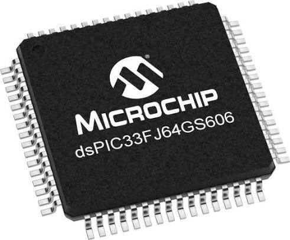

Microchips
Microchips are tiny electronic components that help computers and other devices process information.

Discover technology you never knew existed.
Technology is part of our everyday lives. Discover interesting facts about the inventions and systems that help shape our world.
Microchips are tiny electronic components that help computers and other devices process information.

Wi-Fi allows devices to connect to a network wirelessly, making internet access more convenient.

GPS stands for Global Positioning System. It helps people determine their location using signals from satellites.